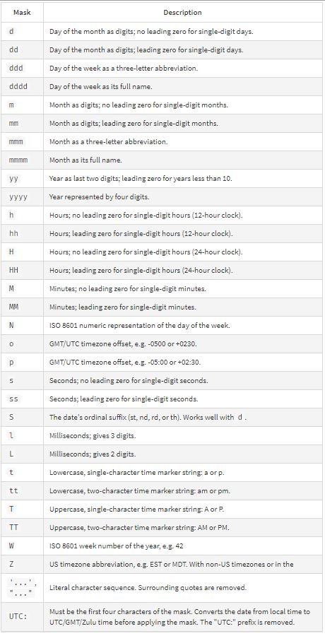

| IP Fritzbox |
Yes |
Here you must insert the ip address (i.e. 192.168.178.1) or the domain name (i.e. fritz.box) of your fritzbox |
| Username |
Yes |
The username is the FRITZ!Box user you have created |
| Password |
Yes |
You have to set the password for your FRITZ!Box user. In case of an adapter failure it could helpful if you insert the password again and save the adapter configuration. |
| polling interval in minutes |
Yes |
The Interval can set between 1 and 59 minutes. This is the interval for the FB-devices setting |
| Select history adapter |
No |
All the installed history adapters are chown here. You should choose your prefered one |
| Date format |
Yes |
The date format is used for some json lists and html tables.
See here for more information: npm dateformat: mask options>

|
| create FB-Devices |
No |
If enabled, the folder fb-devices is created in the object section from ioBroker.
For every device in the fritzbox a device object is created in the fb-devices folder. |
| create mesh info |
No |
This option could be enabled, if the FB-Device option is enabled.
For every interface of a device in the mesh list a channel is created.
|
| synchronize FB-Devices (once) |
No |
Enable this option to synchronize the devices ones |